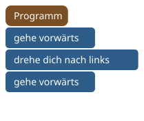
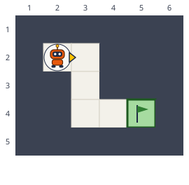

Programmieren mit Blöcken
Mit einem KI-Tutor lernen
Ein KI-Tutor erklärt dir diese Seite und hilft dir bei den Aufgaben. Wähl deinen Assistenten:
Mit Claude öffnen Mit ChatGPT öffnen Mit Mistral Vibe öffnen
Du nutzt dein eigenes Konto beim Anbieter. Der Assistent ist kein Angebot von lernapps.net: lernapps liefert nur Inhalte und Aufgaben. Die Wahl gilt für alle Seiten, nur auf diesem Gerät.
Kiko liest keine Karten
Im Klassenchat der 7b:
Mia: Ich will nicht mehr Kiko sein. Kann der echte Kiko nicht selbst laufen?
Frau Berg: Kann er! Aber Karten kann er nicht lesen. Er braucht ein Programm. In der Werkstatt steckt ihr dafür Blöcke zusammen.
Ben: Ich hab schon eins gebaut. Was macht es?
Hier lernst du, wie aus Karten ein Programm wird und wie du Fehler darin findest.
Aufgabe
Lösung
Feld A
Du hast jede Drehung wie einen Schritt gezählt. Beim Drehen bleibt Kiko auf seinem Feld.
Feld B richtige Antwort
Richtig: ein Feld nach rechts, zwei Felder hoch, dann wieder ein Feld nach rechts.
Feld C
Du hast vor dem letzten Block aufgehört zu zählen. Nach „drehe dich nach rechts“ kommt noch „gehe vorwärts“.
Feld D
Du hast einen Block übersprungen. Nach dem Linksdrehen geht Kiko zweimal vorwärts.
Ein Programm wird Block für Block ausgeführt, genau wie die Karten. Kiko endet in Spalte 4, Zeile 4.
Vom Algorithmus zum Programm
Neu ist: Ein Computer führt die Blöcke aus, und der rät nie. Darum schreibst du den Algorithmus in einer Sprache auf, die er versteht.
- Programm
Ein Programm ist ein Algorithmus, aufgeschrieben in einer Programmiersprache, damit ein Computer ihn ausführen kann.

© CC-BY-4.0Jonas drei Karten aus Kapitel 1, jetzt als Blöcke
- blockbasierte Programmiersprache
In einer blockbasierten (visuellen) Programmiersprache baust du Programme aus Blöcken, die du zusammensteckst, statt sie zu tippen.
- debuggen
Debuggen heißt, Fehler im Programm finden und beheben. Dazu gehst du das Programm Schritt für Schritt durch.
Merke
Ein Block, der nicht am Kopf „Programm“ hängt, wird nicht ausgeführt. Läuft Kiko falsch, steckt ein Fehler im Programm, nicht in Kiko.
Selbst ausprobieren
In der Werkstatt: Links liegen die Blöcke in einer Liste (der Werkzeugkiste), rechts baust du dein Programm unter den Kopf „Programm“ (die Arbeitsfläche). „Start“ lässt Kiko das ganze Programm laufen, „Ein Schritt“ führt einen Block nach dem anderen aus.
Ben hat noch ein Programm gebaut, aber Kiko läuft gegen die Wand. Einen Block löschst du, indem du ihn anklickst und Entf drückst oder ihn zurück in die Liste ziehst. Finde den einen falschen Block und tausch ihn aus: Challenge „Finde den Fehler“ öffnen

© CC-BY-4.0So sieht die Challenge in der Werkstatt aus.
Übung
Aufgabe
Lösung
Block 3 richtige Antwort
Nach zwei Schritten muss Kiko im Bild nach unten. Dafür dreht er sich nach rechts, nicht nach links.
Block 6
Dieser Block stimmt. Kiko schaut dann im Bild nach unten, und nach links gedreht schaut er zum Ziel.
Block 2
Zwei Schritte geradeaus passen, die Kurve kommt nach dem zweiten Feld.
Block 7
Bis Block 7 kommt Kiko gar nicht. Er läuft schon vorher gegen die Wand.
Geh das Programm Block für Block durch. Bei Block 3 schaut Kiko nach links gedreht im Bild nach oben, und bei Block 4 läuft er gegen die Wand.
Aufgabe
Lösung
Richtige Antwort: Liste der Blöcke (Werkzeugkiste) – Blöcke zum Auswählen; Arbeitsfläche unter „Programm“ – Platz für dein Programm; Knopf „Start“ – alles ausführen; Knopf „Ein Schritt“ – einen Block ausführen
Mit „Ein Schritt“ siehst du genau, bei welchem Block etwas schiefgeht. Das hilft beim Debuggen.
Aufgabe
Lösung
Richtige Antwort: Die Aussage stimmt nicht.
Ein Computer führt genau die Blöcke aus, die im Programm stehen, nicht mehr und nicht weniger. Er rät nie, was gemeint war.
Aufgabe
Lösung
Richtige Antwort: 6
3-mal „gehe vorwärts“, 1-mal „drehe dich nach links“ und 2-mal „gehe vorwärts“: zusammen 6 Blöcke.
Wie es weitergeht
Du kannst jetzt ein Programm aus Blöcken bauen, laufen lassen und debuggen. Lea schreibt: „Bens Programm klappt nur auf diesem einen Spielfeld. Steht woanders eine Wand, läuft Kiko dagegen.“ Auf der nächsten Seite lernt Kiko, vorher nachzusehen.
Fehler gefunden oder eine Idee für diese App?